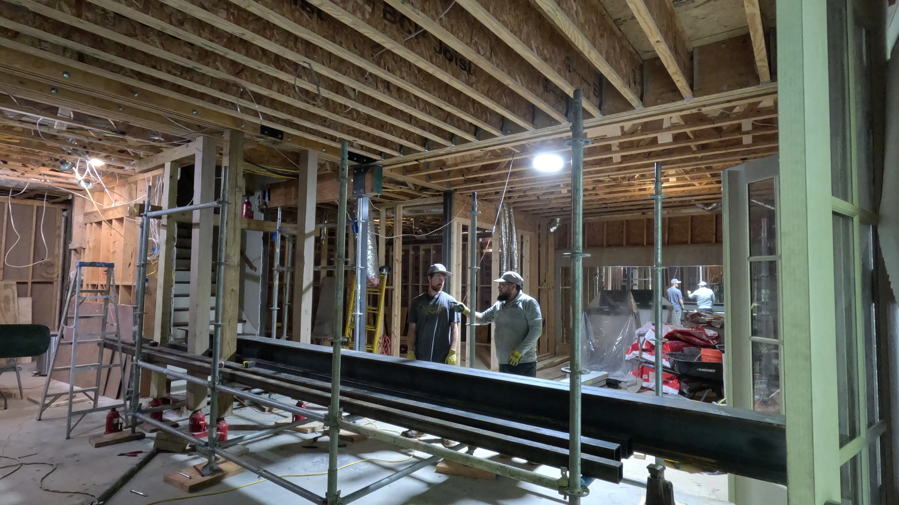
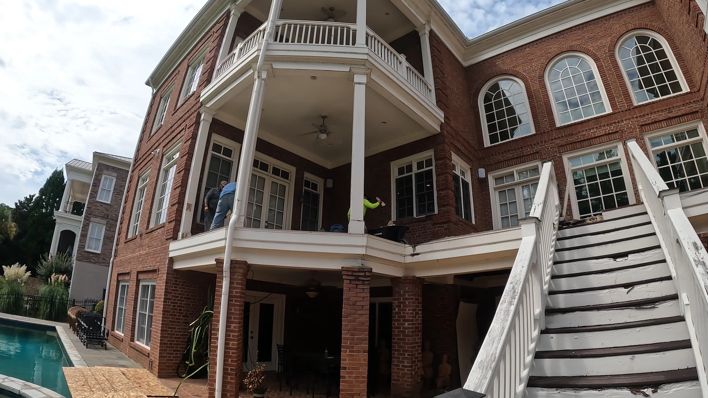

Improved structural stability
Correcting sagging or settling helps restore support to the structure and reduces strain on compromised areas.
OUR SERVICES
Uneven floors, sagging framing, and settling structures are common issues in homes and buildings throughout Metro Atlanta. Structural jacking and leveling can help restore support, improve stability, and correct elevation problems at the source.
Structures, Inc. approaches jacking and leveling work with care, precision, and a long-term mindset. We evaluate the structure, identify where support has been compromised, and develop practical solutions to help bring the building back into proper alignment.
Proper leveling work helps address movement, improve load support, and create a stronger foundation for lasting repairs.


DETAILED OVERVIEW
Our Structural Jacking & Leveling service is designed to address buildings that have shifted, settled, or lost proper support over time. These issues may show up as sloping floors, sticking doors and windows, visible sagging, or signs of framing movement that continue to worsen if left untreated.
We assess the affected areas, determine where structural correction is needed, and use controlled lifting and support methods to help restore the building to a more stable position. In many cases, jacking and leveling work is paired with reinforcement or repair so the corrected structure has the support it needs moving forward.
This service can apply to residential and commercial properties where settlement, age, moisture damage, or failing supports have created uneven conditions. Our goal is not just to lift a structure, but to help correct the problem in a way that is practical, dependable, and built to last.
WHY IT MATTERS
Correcting sagging or settling helps restore support to the structure and reduces strain on compromised areas.
Jacking and leveling can help address uneven floors, sticking openings, and other signs of structural movement.
When structural issues are corrected at the support level, future repairs and finish work have a more reliable foundation.
START YOUR PROJECT
Contact Structures, Inc. to discuss structural jacking and leveling, ask questions, or request a consultation for your property.
Contact Us